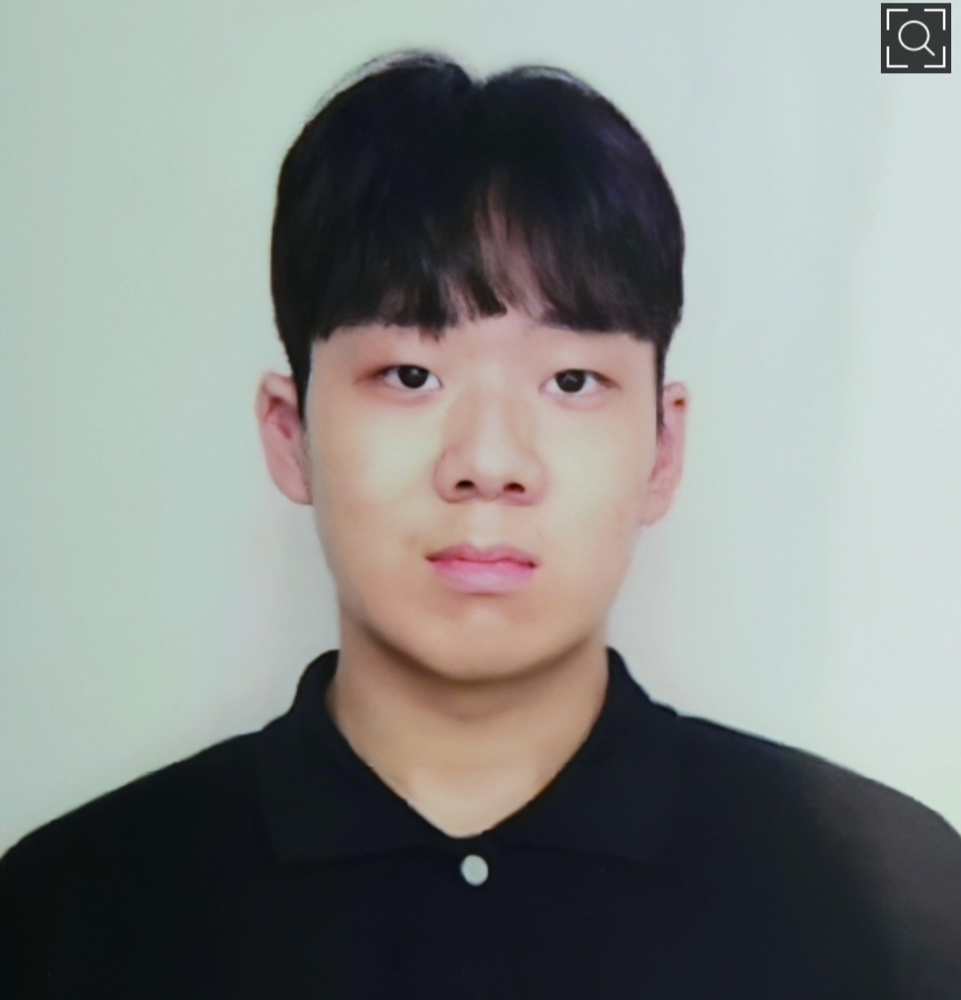
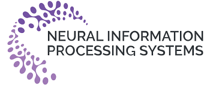

Inkwan Hwang
Hello! I am a second-year B.S. student at POSTECH in Republic of Korea. My primary research interest lies in the area of deep learning and computer vision. Previously, I completed my high school degree at Incheon Science High School.
Email / CV / LinkedIn / Github


B.S. in Computer Science and EngineeringGPA 4.0/4.3
Exchange studentGPA 4.0/4.0
Research Intern Participated in STIP (Samsung Talented Internship Program) Implemented quantization codes for ML defense code of SSD
Undergraduate Researcher
Research InternEPFL Summer Fellowships for International Students
English, Korean (Native)
Template